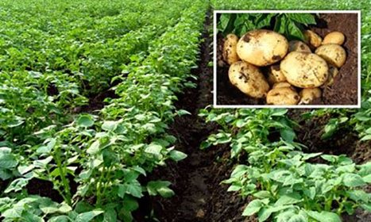
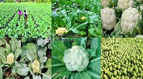
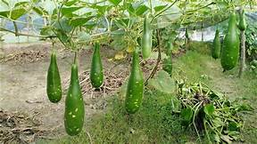
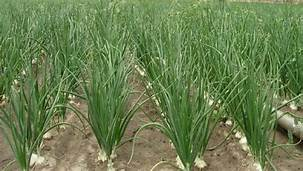

আলু চাষ পদ্ধতি
আলুর জাত নির্ণয়আলু চাষে জমি তৈরি
আলু চাষের সময়
আলু চাষে রোপণের দূরত্ব
আলু চাষে সার প্রয়োগ
আলু চাষে সেচ পদ্ধতি
আলু চাষে পরিচর্যা
আলু চাষে রোগবালাই দমন
আলু চাষে ফসল সংগ্রহ

আমাদের দেশে খাদ্য হিসাবে আলুর চাহিদা ব্যাপক। কিন্তু চাহিদার তুলনায় আলুর উৎপাদন খুবই কম। কারণ-সঠিক চাষাবাদের অভাব, কৃষক আলু উৎপাদন করে ন্যায্য মূল্য পায় না ইত্যাদি। আলুতে ভিটামিন সি ও বি পাওয়া যায়। নিম্নে আলু চাষের পদ্ধতি সম্পর্কে কিছু তথ্য দেওয়া হল:
আলুর জাত নির্ণয়
আমাদের দেশে নানা প্রকারের আলুর জাত রয়েছে। এদের মধ্যে উল্লেখযোগ্য-হীরা, ডায়ামন্ড, আইসলা, মুলটা, চমক, ধীরা, কারেজ, সাগিটা, কার্ডিনাল ইত্যাদি। এসকল জাত উচ্চফলনশীল
জমি তৈরি
আলু চাষের আগে জমি ভাল করে ৩-৪টি চাষ ও মই দিয়ে নিতে হবে।
আলু চাষের সময়
আমাদের দেশে জয়পুরহাট, রাজশাহী, পাবনা, যশোর, রংপুর, দিনাজপুর, ঠাকুরগাঁও, লালমনিরহাট ইত্যাদি জেলায় প্রচুর পরিমাণ আলু উৎপাদন হয়। এসব এলাকায় নভেম্বরের ১ম সপ্তাহ থেকে শেষ সপ্তাহ পর্যন্ত আলু চাষ করার উপযোগী সময়।
আলু চাষে রোপণের দূরত্ব
আলু রোপণের সময় আলুর সারি থেকে সারির দূরত্ব দিতে হবে ৬০সে.মি.এবং আলু থেকে আলুর দূরত্ব হতে হবে ২৫ সে.মি.।
আলু চাষে সার প্রয়োগ
আলুর জমিতে একরপ্রতি ৪ টন গোবর
ইউরিয়া-১০০-১১০ কেজি
টিএসপি-৫০-৬০ কেজি
এমওপি-৯০-১০০ কেজি
জিপসাম-৫০-৫৫ কেজি
জিংক সালফেট-৪-৬ কেজি
ইউরিয়া ও এমওপি সারের অর্ধেক এবং অন্যান্য সার আলু রোপণের সময় জমিতে মিশিয়ে দিতে হবে। বাকী অর্ধেক ইউরিয়া ও এমওপি আলু গাছে মাটি তোলার সময় দিতে হবে।
আলু চাষে সেচ পদ্ধতি
আলুর ভাল ফলন পেতে হলে আলু তোলার আগ পর্যন্ত ১০-১৫ দিন পরপর মাটির গুণাগুণ দেখে সেচ দিতে হবে।
আলু চাষে পরিচর্যা
আলু রোপণের এক মাস পর জমির আগাছা দমন করে গাছের গোড়ায় মাটি তুলে দিতে হবে।
আলু চাষে রোগবালাই দমন
আলু গাছে বিভিন্ন প্রকার প্রকার রোগ ও ছত্রাকের আক্রমন দেখা দিতে পারে। এসব রোগ-বালাই দমনের জন্য প্রয়োজনীয় পদক্ষেপ গ্রহণ করতে হবে।
আলু চাষে ফসল সংগ্রহ
আলু গাছ লাগানোর পর ১০০ থেকে ১২০ দিনের মধ্যে খাবার আলু সংগ্রহ করা যায়। ভালো জাতের আলু চাষ করলে আলুর ফলন একর প্রতি ৮ থেকে ১২ টন উৎপাদন করা সম্ভব।
শিম চাষের পদ্ধতি

জমি নির্বাচন
দোআঁশ ও বেলে দোআঁশ মাটিতে শিম ভালো হয়। শিম গাছ জলাবদ্ধতা সহনশীল নয়। তাই উচু জমি নির্বাচন করতে হবে। জমিতে পর্যাপ্ত আলো-বাতাস থাকতে হবে।
শিমের জাত নির্বাচন
গ্রীষ্মকালীন শিমের জন্য অটো শিম খুব উপযুক্ত। এটি বৈশাখ-জৈষ্ঠ মাসে বপন করলে শ্রাবণ মাস থেকে চৈত্র মাস পর্যন্ত বিরামহীন ফলন দিতে থাকে। গ্রীষ্মকালে কেজি প্রতি ১০০ থেকে ১৪০ টাকা দরে শিম বিক্রি হয়। তবে এ সময় ফলন একটু কম হয়। এছাড়াও আইরেট, ইপসা-১ ও ২, বারি শিম- ৩ ও ৭ সহ আরো কিছু জাত আছে। আগাম চাষের জন্য পুটি শিম অথবা গ্রীষ্মকালীন জাতগুলোই ব্যবহার করা যায়।
শীতকালীন জাত সমুহ
শীতকালীন জাতের মধ্যে বারি শিম-১ হচ্ছে নাম্বার ওয়ান। এছাড়াও বারি শিম-৬, নলডগ, হাতিকান, গোলগাদ্দা সহ আরো বহু ধরনের শিমের জাত আছে। শীতকালীন শিমে বালাইনাষক কম দেয়া লাগে। তাই শীতকালীন শিম চাষে খরচ কম হয়।
জমি প্রস্তুতকরণ
ভালোভাবে কয়েকটি চাষ-মই দিয়ে জমি সমান করে নিতে হবে। শেষ চাষে জৈব/গোবর সার শতক প্রতি এক বস্তা করে দিলে ভালো ফল পাওয়া যায়। কিছু ছাই ও খোইল দিয়ে দেয়া উত্তম। ৩ মিটার প্রশস্ত বেড তৈরী করে বেডের দুই পাশে ২ মিটার পর পর মাদা তৈরী করে প্রতি মাদায় ১০০ গ্রাম টিএসপি, ৫০ গ্রাম এমপি এবং সামান্য জীপসাম দিয়ে মাটির সাথে ভালোভাবে মিশিয়ে ১ সপ্তাহ রেখে দিতে হবে। মাদার গর্ত ২ ফিট ব্যস ও ১.৫ ফিট গভিরতা দেয়া যায়।
বীজ বপন
আগাম চাষের জন্য জৈষ্ঠ-আষাঢ় মাসে আর শীতকালীন শিম চাষের জন্য শ্রাবণ-ভাদ্র মাসের মধ্যে বীজ বপন করতে হবে। মাদা প্রতি ৩-৪ টা বীজ অথবা ২-৩ টা সুস্থ চারা রোপন করলেই হবে।
মাচা প্রস্তুতকরণ
শিম গাছ লতা নিতে শুরু করলে মাচার ব্যবস্থা করতে হবে। অথবা বাশের আগা ও কঞ্চি ঘন ঘন পুতে দিয়েও গাছ উপরে তুলে দেয়া যায়।
শিম গাছের পরিচর্যা
গাছের গোড়ায় মাটি দিয়ে একটু উচু করে রাখতে হবে যাতে পানি জমতে না পারে। গোড়া আগাছামুক্ত রাখতে হবে। চারা রোপনের ২-৩ সপ্তাহ পর পর মাদা প্রতি ৫০ গ্রাম করে ইউরিয়া ও পটাশ সার দিতে হবে। চটা হলে ভেঙ্গে দিতে হবে। গাছ মাচায় ওঠার আগে নিচে যে শাখা-প্রশাখা বের হয়, তা ছেটে দিতে হবে। মাচায় গাছ অনেক ঘন হয়ে গেলে পাতা ছেটে মাচা ফাঁকা করে দিয়ে ভালো ফল পাওয়া যায়। অনেকগুলো লতা এক সাথে জোড় নিলে তা আলাদা করে দিতে হবে।
সার ও হরমন প্রয়োগ
বানিজ্যিকভাবে চাষাবাদের ক্ষেত্রে সার প্রয়োগের বিকল্প নেই। ফলন সংগ্রহের পর বা গাছের অবস্থা বুঝে পরিমাণ মতো ইউরিয়া, পটাশ, ডিএপি, জিংক, বোরন ইত্যাদি সার দিতে হবে। মাটি শুকিয়ে গেলে পানির ব্যবস্থা করতে হবে। হরমন হিসেবে ফ্লোরা, লিটোসেন ইত্যাদি ব্যবহার করা যায়।
পোকামাকড় ও রোগ বালাই
বিভিন্ন সময় শিম গাছে রোগবালাই ও পোকামাকড় আক্রমন করে থাকে নিচে প্রতিকার সম্পর্কে আলোচনা করা হলো।
পোকামাকড়
শিম গাছে জাবপোকা, সাদা মাছি ও ফল ছিদ্রকারী পোকা আক্রমন করে। জাব পোকা আর সাদা মাছির জন্য ইমিডাক্লোরোপ্রিড গ্রুপের কীটনাষক স্প্রে করতে হবে। আর ফলছিদ্রকারী পোকার জন্য এমামেকটিন বেনজয়েড গ্রুপের কীটনাষক অথবা সাইপারমেথ্রিন স্প্রে করতে হবে।
রোগ বালাই
শিম গাছের পাতায় সবুজ-হলুদ ছোপ ছোপ মোজাইক ভাইরাস দেখা যায়। শোষক পোকার আক্রমনে বা বীজ থেকে এ রোগ হয়। বীজ শোধন আর শোষক পোকা (সাদা মাছি ও জাব পোকা) দমন করতে হবে। অ্যানথ্রাকনোজ এর কারনে পচন হয়। ফুল-ফল ঝরে পড়ে। ফলে স্পট পড়ে। নাটিভো বা এমিস্টারটপ দিয়ে পচন ঠিক করা যায়। এছাড়াও অন্যান্য ছত্রাকনাষকও ব্যবহার করা যায়। এছাড়াও গাছের গোড়ায় নোমাটেড বা কৃমিতে আক্রমন করে শেকড়ে গিটের সৃষ্টি বা নষ্ট করে দিতে পারে। কার্বোফুরান প্রয়োগে এটি দমন হয়
ফলন সংগ্রহ
গ্রীষ্মকালীন গাছগুলো বীজ বপণের ৪৫ – ৫০ দিনের মধ্যেই ফুল চলে আসে। দেশি শিম গাছ যতো আগেই লাগানো হোক না কেনো, নভেম্বর মাসের আগে ফুল আসে না। তবে শিমের ফুল আসার জন্য ঠান্ডার প্রয়োজন হলেও গাছের বৃদ্ধির জন্য গরমের প্রয়োজন হয়। ফুল পরাগায়নের ১৫ দিন পর খাওয়ার উপযুক্ত হয়। শিমের আকার বড়ো হলে সপ্তাহে ২-১ বার সংগ্রহ করতে হয়। বীজ করেও খাওয়া যায়। নিয়মিত ফসল সংগ্রহ করলে ফলন বৃদ্ধি পায়। একটি কথা মনে রাখতে হবে- শিম গাছ যত বৃদ্ধি পাবে, ফলনও ততো বাড়বে। তাই তার বৃদ্ধির জন্য জায়গা করে দিতে হবে।
ফুলকপির চাষাবাদ পদ্ধতি
জাত :
এ দেশে এখন ফুলকপির পঞ্চাশটিরও বেশি জাত পাওয়া যাচ্ছে। শীতকালেই আগাম, মধ্যম ও নাবি মওসুমে বিভিন্ন জাতের ফুলকপি আবাদ করা যায়। আগাম চাষ করা যায় ফুলকপির এমন জাতগুলো হলো অগ্রহায়ণী, আর্লি পাটনা, আর্লি স্নোবল, সুপার স্নোবল, ট্রপিক্যাল স্নো ৫৫, সামার ডায়মন্ড এফ১, ম্যাজিক স্নো ৫০ দিন এফ১, হোয়াইট বিউটি, কেএস ৬০, আর্লি বোনাস, হিট মাস্টার, ক্যামেলিয়া, আর্লি মার্কেট এফ১, স্পেশাল ৪৫ এফ১, স্নো কুইন এফ১ ইত্যাদি। এসব জাতের বীজ শ্রাবণ-ভাদ্র মাসে বপন করা যায়। মাঝ মওসুমের উপযুক্ত অনেক জাত আছে। এগুলো হলো বারি ফুলকপি ১ (রূপা), চম্পাবতী ৬০ দিন, চন্দ্রমুখী, পৌষালী, রাুসী, স্নোবল এক্স, স্নোবল ওয়াই, হোয়াইট টপ, স্নো ওয়েভ, মোনালিসা এফ১, ম্যাজিক ৭০ এফ১, বিগটপ, চন্দ্রিমা ৬০ এফ১, হোয়াইট ফ্যাশ, বিগশট, হোয়াইট কনটেসা ইত্যাদি। এসব জাতের বীজ ভাদ্র-আশ্বিন মাসে বপন করতে হয়। নাবি করে ফুলকপি চাষ করতে চাইলে মাঘী বেনারসি, ইউনিক স্নোবল, হোয়াইট মাউন্টেন, এরফার্ট ইত্যাদি জাত লাগানো যেতে পারে। এসব জাতের বীজ আশ্বিন-কার্তিক মাসে বপন করতে হয়।
চারা তৈরি :
ফুলকপির চারা বীজতলায় উৎপাদন করে জমিতে লাগানো হয়। বীজতলার আকার এক মিটার পাশে ও লম্বায় তিন মিটার হওয়া উচিত। সমপরিমাণ বালু, মাটি ও জৈবসার মিশিয়ে ঝুরঝুরা করে বীজতলা তৈরি করতে হয়। দ্বিতীয় বীজতলায় চারা রোপণের আগে সাত থেকে আট দিন আগে প্রতি বীজতলায় ১০০ গ্রাম ইউরিয়া, ১৫০ গ্রাম টিএসপি ও ১০০ গ্রাম এমওপি সার ভালোভাবে মিশিয়ে দিতে হবে। পরে চারা ঠিকমতো না বাড়লে প্রতি বীজতলায় প্রায় ১০০ গ্রাম পরিমাণ ইউরিয়া সার ছিটিয়ে দেয়া ভালো। প্রতি শতক জমিতে ফুলকপি চাষের জন্য এ রকম একখ বীজতলায় ২ থেকে ২.৫ গ্রাম বীজ বুনলেই চলবে।
চারা রোপণ :
বীজ গজানোর ১০ থেকে ১২ দিন পর গজানো চারা দ্বিতীয় বীজতলায় স্থানান্তর করতে হয়। চারায় পাঁচ থেকে ছয়টি পাতা হলেই তা রোপণের উপযুক্ত হয়। সাধারণত ৩০ থেকে ৩৫ দিন বয়সের চারা রোপণ করা হয়। সারি থেকে সারির দূরত্ব দেয়া লাগে ৬০ সেন্টিমিটার বা দুই ফুট এবং প্রতি সারিতে চারা থেকে চারার দূরত্ব দিতে হবে ৪৫ সেন্টিমিটার বা দেড় ফুট। চারা রোপণের সময় সতর্ক থাকতে হবে যেন শিকড় মুচড়ে বা বেঁকে না যায়। এতে চারার মাটিতে লাগতে দেরি হয় ও বৃদ্ধি কমে যায়।
সার ব্যবহার:
পচা গোবর জমি তৈরির সময় ৫০ কেজি দিতে হবে। প্রতি শতকে ইউরিয়া শেষ চাষের সময় ২৫০ গ্রাম, তার ২০ দিন পর ৫০০ গ্রাম এবং ৩৫ দিন পর ২৫০ গ্রাম। টিএসপি শেষ চাষের সময় ৭০০ গ্রাম দিতে হবে। এমপি শেষ চাষের সময় ২০০ গ্রাম, ২০ দিনপর ৩০০ গ্রাম এবং ৩৫ দিন পর ২০০ গ্রাম। জিপসাম জমি তৈরির সময় ৪০০ গ্রাম দিতে হবে। জিংক সালফেট শেষ চাষের পর ৪০ গ্রাম এবং সোহাগা শেষ চাষের সময় ৪০ গ্রাম।
২৫ থেকে ৩০ দিন বয়সের চারা সারি থেকে সারি ৫০ সে.মি. (২০ ইঞ্চি) এবং চারা থেকে চারা ৪০ সে.মি. (১৬ ইঞ্চি) দূরত্ব বজায় রেখে রোপণ করতে হবে। প্রথম ও দ্বিতীয়বার সার উপরি প্রয়োগের পর পরই সারির দু’পাশের মাটি আলগা করে গাছের গোড়ায় তুলে দিতে হবে। এতে সেচ ও নিষ্কাশন উভয় কাজে সুবিধা হবে। চারা রোপণের ৪৫ দিন পর কপি সংগ্রহ করতে হয়। শতকে ৬০-৮০ কেজি আর একরে ৬ থেকে ৮ টন ফুলকপি জন্মে।
সেচ ও আগাছা ব্যবস্থাপনা :
সার দেয়ার পরপরই সেচ দিতে হবে। এ ছাড়া জমি শুকিয়ে গেলে সেচ দিতে হবে। জমিতে পানি বেশি সময় ধরে যেন জমে না থাকে সেটাও খেয়াল করতে হবে। সার দেয়ার আগে মাটির আস্তর ভেঙে দিয়ে নিড়ানি দিয়ে আগাছা পরিষ্কার করে দিতে হবে।
বিশেষ পরিচর্যা :
ফুলকপি গাছের সারি মাঝে সার দেয়ার পর সারির মাঝখানের মাটি তুলে দু’পাশ থেকে গাছের গোড়ায় টেনে দেয়া যায়। এতে সেচ ও নিকাশের সুবিধা হয়। তবে ফুলকপির ফুল সাদা রাখার জন্য কচি অবস্থায় চার দিক থেকে পাতা টেনে বেঁধে ফুল ঢেকে দিতে হবে। সূর্যের আলো সরাসরি ফুলে পড়লে ফুলের রঙ তথা ফুলকপির রঙ হলুদাভ হয়ে যাবে।
লাউ চাষ পদ্ধতি
উৎপাদনের পরিমাণে কুমড়া পরিবারের সবজিসমূহের মধ্যে লাউয়ের স্থান দ্বিতীয়। শীতকালে এ সবজির চাষাবাদ বেশি হলেও বর্তমানে গ্রীষ্মকালেও এর উৎপাদন যথেষ্ট। গ্রীষ্মকালীন লাউ এর জাত প্রাপ্যতার কারণে এ মৌসুমে লাউয়ের উৎপাদন বেড়েছে।গ্রীষ্মকালনি লাউ চাষে সমপরিমান রোপা আমন ধান চাষের থেকে অধিক লাভ হয়। গ্রীনলেডি/ ডায়না / গ্রীন ডায়মন্ড/ বারি লাউ- ৪ প্রভৃতি গ্রীষ্মকালে চাষ করা হয়।
বীজ বপণ :-
সম পরিমান মাটি ও গোবর মিশিয়ে সেই মিশ্রিত মাটি ৮ x ১০ সে.মি. আকারের ছিদ্রযুক্ত পলিব্যাগে ভরে প্রতি পলিব্যাগে ২টি করে বীজ রোপন করতে হবে। বীজ রোপনের আগে ১৫-২০ ঘণ্টা বীজ পানিতে ভিজিয়ে নিতে হবে। বিঘা প্রতি ২৬৬-৫৩০ গ্রাম বীজ প্রয়োজন।
রোপণের জন্য চারার বয়স :-
রোপণের জন্য চারার বয়স ১৬-১৭ দিন ।
জৈব পদার্থ সমৃদ্ধ দোআঁশ ও এটেল দোআঁশ মাটি লাউ চাষের জন্য উত্তম।বেড এর আকার হবে প্রস্থ- ২.৫ মিটার, উচ্চতা- ১৫-২০ সে.মি,নালা- ৬০ সে.মি. (বেড থেকে বেড দূরত্ব)। মাদার ব্যাস হবে- ৫০ সে.মি., গভীরতা- ৫০ সে.মি। বেডের কিনারা থেকে ৬০ সে.মি. বাদ দিয়ে মাদার কেন্দ্র ধরে ২ মিটার পরপর ১ সারিতে মাদা তৈরি করতে হবে।
মাদা তৈরির সময় প্রতি মাদায়ঃ গোবর- ১০ কেজি, টিএসপি- ৫০ গ্রাম, এমপি- ৫০ গ্রাম ও ৮ গ্রাম ম্যাগনেসিয়াম অক্সাইড। চারা রোপণের ৩০-৩৫ দিন পর থেকে প্রতি মাদায় ২০ দিন অমত্মরঃ ইউরিয়া- ৩০ গ্রাম ৪ বার।
জমি চাষে সার প্রয়োগ:
পঁচা গোবর- ১০০ কেজি টিএসপি- ২.০ কেজি, ইউরিয়া- ২.০ কেজি, এমপি- ২.০ কেজি, জিপসাম- ২ কেজি, দস্তা- ২৫০ গ্রাম, বোরান- ২০০ গ্রাম, ম্যাগনেসিয়াম অক্সাইড- ২৫০ গ্রাম।
সেচ দেয়া :-
৫-৭ দিন পর সেচ দিতে হয়।
শোষক শাখা/অপসারণ :
গাছের গোড়ার দিকে যে ছোট ছোট ডগা হয় তাকে শোষক শাখা বলা হয়। গাছের গোড়ার দিকে ৪০-৪৫ সে.মি. পর্যমত্ম শোষক শাখাগুলো কেটে অপসারণ করতে হবে।
ফসল তোলা (পরিপক্কতা সনাক্তকরণ)
১। ফলের গায়ে প্রচুর শুং থাকবে।
২। ফলের গায়ে নখ দিয়ে চাপ দিলে খুব সহজেই নখ ডেবে যাবে।
৩। পরাগায়নের ১২-১৫ দিন পর ফল সংগ্রহের উপযোগী হয়।
পেঁয়াজ চাষাবাদ পদ্ধতি
বীজ বপনের সময়কালঃ
কন্দপেঁয়াজ বীজ বপনের সঠিক সময়কাল হল জুনমাসের মাঝামাঝি। অবশ্য এর ক্ষেত্র তৈরী করে রাখতে হয় মার্চমাসের মাঝামাঝি সময়কাল থেকে।
কন্দ রোপন প্রযুক্তি
ছোটো ও মাঝারিমানের কন্দ ১০-১২ কুইন্ট্যাল, প্রতি কন্দে ১৫ সেমি দূরত্বে ও প্রতি লাইনে ৩০ সেমি দূরত্ব বপন করতে হবে। কন্দ বপনের ১ থেকে ২ দিন অন্তর অন্তর জলসেচ করা উচিত।
সার প্রয়োগ
এই ফসল চাষের জন্য একর প্রতি ২০ টন জৈব সার, ৪০ কেজি নাইট্রোজেন বা ৯০ কেজি ইউরিয়া সার ও ২০ কেজি পটাশিয়াম পেন্টাক্সাইড বা ১২৫ কেজি সিঙ্গেল সুপার ফসফেট এবং ২০ কেজি পটাশিয়াম অক্সাইড বা ৩৫ কেজি মিউরিটস অব্ পটাশ প্রয়োগ করতে হবে। সমস্ত সারের অর্ধাংশ চারা স্থানান্তরের আগে প্রয়োগ করতে হবে আর বাকি সারটি চারা স্থানান্তরের চারমাস পরে প্রযুক্ত হবে।
চারা স্থানান্তরিতকরণ
যখন প্রতিটি চারার বয়স ৬-৮ সপ্তাহ ও উচ্চতা ১৫ সেমি পর্যন্ত হবে তখন তাদের বীজতলা থেকে প্রধান ক্ষেতে স্থানান্তরিত করতে হবে। এই সময় প্রতি চারার মধ্যেকার দূরত্ব হতে হবে ২০ সেমি। চারা স্থানান্তরকরণের পর পরই একবার জলসেচ করে নিতে হবে। চারা স্থানান্তরকরণের কাজটি মূলত সন্ধ্যাবেলাতেই করা উচিত যাতে স্বল্প আলোয় সুস্থ থাকতে।
আগাছা নিয়ন্ত্রণ
পেঁয়াজ চাষে জমির আগাছাকে সম্পূর্ণ মুক্ত রাখতে হবে, এর জন্য অবশ্যই আগাছানাশক ব্যবহার করা উচিত।
ফসল তোলা
ভালো ফসল তোলার প্রধান রহস্য হলো সঠিকভাবে বীজ বপন বা মূখ্য বৃদ্ধিকালে গাছের সঠিক পরিচর্যা। সাধারণতঃ ডিসেম্বর মাসে ফসল তোলা হয়। এই ফসলের রোগ বা পোকাজনিত কোনো সমস্যা নেই। তবে আর্দ্রতাজনিত কারণে অনেক সময় পেঁয়াজ নষ্ট হয়ে যায়, সেইজন্য সদ্য উৎপাদিত ফসলকে শুষ্ককরণের জন্য সবসময় মুক্ত আলোবাতাসপূর্ণ গুদামঘরে রাখা উচিত, কারণ মুক্ত বাতাস পেঁয়াজের পচনের হাত থেকে রক্ষা করে।